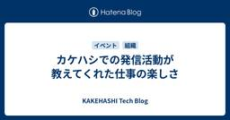
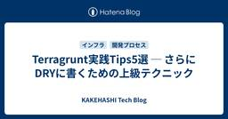
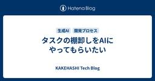
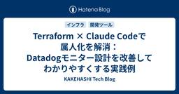
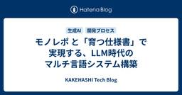

KAKEHASHI Tech Blog
https://kakehashi-dev.hatenablog.com/
カケハシのEngineer Teamによるブログです。
フィード

カケハシでの発信活動が教えてくれた仕事の楽しさ 1
1
KAKEHASHI Tech Blog
こんにちは、AI在庫管理のプロダクト開発をしているソフトウェアエンジニアの鳥海 (X: @toripeeeeee)です。 今まで発信活動もほとんど行っておらず、発信することに対して苦手意識もある私が、カケハシに入社してから発信活動を始めたところ、予想以上に仕事が楽しくなってきました。そこで、カケハシで発信活動をやり始めたきっかけや、テックブログの執筆や登壇を通じて得られた学びや気づき、そして何より仕事の楽しさが増していく実感についてお話ししたいと思います。 この記事は、カケハシアドベントカレンダー12日目の記事です。 発信活動をし始めたきっかけ アドベントカレンダーなどのイベント時のテックブロ…
2日前

Terragrunt実践Tips5選 ─ さらにDRYに書くための上級テクニック 1
KAKEHASHI Tech Blog
AI在庫管理の開発チームでバックエンドエンジニアをしている沖（@takuoki）です。 最近、新しい環境でインフラをゼロから構築する機会があり、Terragruntを採用しました。採用した一番の理由は、複数環境の設定をもっとDRY（Don't Repeat Yourself）に書きたかったからです。というのも、AI在庫管理でもTerraformを利用していますが、複数環境を用意するために全環境で共通の設定をコピペで使い回している箇所が多くあり、何が共通の設定で何が環境依存の設定なのかが区別しにくくなっていたためです。 TerragruntでDRYに記述する基本的な方法は、「terragrunt…
3日前

タスクの棚卸しをAIにやってもらいたい 1
KAKEHASHI Tech Blog
こんにちは、カケハシのMusubi基盤開発チームでSREをしているmorityです。 これは、カケハシ Advent Calendar 2025 の10日目の記事です。 はじめに 当時の私は入社3ヶ月目で、既に作成されているチケットの背景や詳細をあまり知らない状態でした。Musubi基盤開発チームではJiraでタスク管理を行っており、エピックやチケットをきちんと起票して管理する文化は根付いていたのですが、差し込み案件なども多く、着手したが止まってしまったり、途中で優先度が変更されたままのエピックやチケットも数多くありました。 そこで今回、AIを活用してある程度機械的にチケットを棚卸しし、継続し…
4日前

Terraform × Claude Codeで属人化を解消：Datadogモニター設計を改善してわかりやすくする実践例 2
KAKEHASHI Tech Blog
はじめに こんにちは、PocketMusubiチームでエンジニアをしている南光です。 こちらの記事は カケハシ Advent Calendar 2025 の 9日目の記事になります。 さて、Datadogのモニター（アラート）設定、こんな経験はありませんか？ 「閾値、とりあえず10件にしておくか...」 「この設定、なんでこの値なんだっけ？」 「レビューで指摘したいけど、自分も正解がわからない」 監視設定には明確な正解がありません。サービスの特性、運用体制、SLAによって適切な値は変わります。そのため、設定が属人化し、レビューも「なんとなくOK」になりがちです。 この問題を解決するために、2つ…
5日前

モノレポ と「育つ仕様書」で実現する、LLM時代のマルチ言語システム構築 2
KAKEHASHI Tech Blog
こちらの記事は カケハシ Advent Calendar 2025 の 8日目の記事になります。 はじめに ソフトウェアエンジニアのkackyです。 「kintoneの契約データを、Databricks経由でAWS上のプロダクトに同期したい」 このような要件を受けたとき、どのような開発ステップが浮かぶでしょうか？ kintoneのデータ構造を理解する プロダクト側のAPI仕様を把握し、TypeScriptで書かれたバックエンドと連携する。必要に応じて機能追加する 名寄せ処理のビジネスロジックをDatabricksで正確に実装し、検証する 人手でこれらすべてを横断的に把握し、整合性を保ちながら開…
6日前

エンジニアがカンファレンスのブース対応をして良かったこと
KAKEHASHI Tech Blog
こんにちは、AI在庫管理のプロダクト開発をしているソフトウェアエンジニアのもっち(X: @mottyzzz)です。 普段はプロダクトやシステムと向き合う日々を送るソフトウェアエンジニア(以下エンジニア)の皆さん、技術カンファレンスでブース対応と言われると、「知らない人とコミュニケーションするの苦手…」「エンジニアは機能開発に専念していた方が良いのでは」などと身構えてしまう方もいるのではないでしょうか。実は、このブース対応には私たちエンジニアにとって新しい発見や学びがたくさん詰まっています。 今年も何度か参加したカンファレンスのスポンサーブースのブース対応がとても楽しかったので、その経験から良か…
8日前

生成AIフレンドリーなフロントエンド基盤をつくる
KAKEHASHI Tech Blog
こちらの記事は カケハシ Advent Calendar 2025 の 5日目の記事になります。 こんにちは。生成AI研究開発チームでソフトウェアエンジニアをしているNokogiri（@nkgrnkgr）です。 はじめに 私たちのチームでは、新規プロジェクトを始めるにあたり、今後少ない人数で保守性の高いコードを高速に開発できることを目標にフロントエンド基盤を整えることにしました。その過程で、生成AIにコードを書いてもらいつつ、保守性の高いコードを書けるのかを探求しています。 CursorやClaude Codeなどの生成AIツールを使った開発が一般的になってきました。生成AIはコードを書く速度…
9日前
LLM のフォールバックをどうテストする？ Node.js で手軽に障害再現＆カオスエンジニアリング
KAKEHASHI Tech Blog
こちらの記事は カケハシ Advent Calendar 2025 の 4日目の記事になります。 はじめに 生成AI研究開発(GenAI)チームでソフトウェアエンジニアをしている坂尾です。 私たちのチームでは、生成 AI を利用したサービスを開発しています。このサービスでは、Google の Gemini や AWS の Bedrock など、外部 LLM サービスを利用しています。 なお、外部 LLM サービスの利用にあたっては、カケハシでは社内ガイドラインに基づいた厳格なガバナンス体制を設けています。具体的には、CoE（Center of Excellence）組織を中心に、学習データへの…
10日前
2025年のカケハシSRE組織をふりかえる
KAKEHASHI Tech Blog
こちらの記事は カケハシ Advent Calendar 2025 の 3日目の記事になります。 はじめに カケハシのSRE組織は、各プロダクトにEmbedded SREが入り、横断側のPlatform SREが全体最適を支える形で動いています。 参考資料： How SRE teams are organized, and how to get started - Google Cloud Blog 2024年末には、技術・組織の複雑化に伴い、横断フィードバックループと役割/責任（RACI）の明確化が不可欠だという課題意識を置いていました。 2025年の前進を一言でまとめると、次の2つです。 …
11日前
爆速でプロダクトをリリースしようと思ったらマイクロフロントエンドを選んでいた
KAKEHASHI Tech Blog
こんにちは。生成AI研究開発チームでソフトウェアエンジニアをしているNokogiri（@nkgrnkgr）です。 本記事は、2025年9月21日に開催されたフロントエンドカンファレンス東京での発表内容をブログ記事としてまとめたものです。 発表資料はこちらです。 はじめに カケハシでは、約10年運用されているクラウド型電子薬歴システム「Musubi」に生成AI機能を搭載するプロジェクトに取り組みました。その際に採用したのがマイクロフロントエンドというアーキテクチャです。 本記事では、なぜマイクロフロントエンドを選んだのか、どのように実装したのか、そして実際に導入して見えてきた課題と工夫について紹…
11日前
PdMがAI×Databricksで5分待ちの外注システムからデータを取り戻すまで
KAKEHASHI Tech Blog
こちらの記事は カケハシ Advent Calendar 2025 の 2日目の記事になります。 こんにちは！データが好きすぎる梶村(@n_kaji_kaji)です。 カケハシで薬局向けの在庫管理発注システムである「AI在庫管理」というプロダクトのPdMをしていますが、データが好きすぎて担当領域を超えて子会社のデータ移管を行いました。 皆さんの会社にはパッケージの外注基幹システムや開くのに5分かかる巨大なExcelはありますか？ 私たちの子会社のファルマーケットには、その両方がありました。 今回は、リソースが限られる中でDatabricksとCursorをフル活用し、ガチガチに固まったレガシー…
11日前
VPoTとしての2025年。手を動かし続けていたい。
KAKEHASHI Tech Blog
こんにちは、椎葉です。カケハシでVPoT（VP of Technology）をやってます。今年は自分にとって、これまで以上に挑戦の多い年でした。年初には自分がVPoTになるなんて全く想像もしていませんでした。この記事では自分にとっての2025年をふりかえってみようと思います。 と、その前に カケハシのアドベントカレンダーはじまります！ 2025年も残すところあと1ヶ月ですね！カケハシのアドベントカレンダーはじまります！エンジニア以外にもデザイナーやPdMなど、いろんなメンバーがエントリーしてくれているので、どんな記事が出てくるのか今から楽しみです。 最新情報は @kakehashi_dev で…
13日前
コーディングエージェントのカスタムコマンドでGit操作を効率化
KAKEHASHI Tech Blog
こんにちは、椎葉です。カケハシでVPoT(VP of Technology)をやっています。今日は、僕が使っているCursorのカスタムコマンドを2つ紹介します。 カケハシではコーディングエージェントとして、Cursor、Claude Code、GitHub Copilot、そしてDevinを利用できます。その中で僕はメインではCursorを使用しています。最近だと、Cursorを使ってTerraformによるAWSのインフラ構築をやっていて、便利だなーと思っています。 そんな日々の作業の中で、コミットとプルリクエストの作成をよく実施しているので、その2つをCursorのカスタムコマンドとして…
17日前
患者価値に突き進み、新たな事業の可能性を切り拓く。新規サービスチームの最高に幸せな日々
KAKEHASHI Tech Blog
カケハシの主力プロダクトといえば、クラウド型電子薬歴『Musubi』。現在、『Musubi』を活用した新たなビジネスの立ち上げがハイスピードで進んでいます。 そのプロジェクトを担う「PE新規サービス開発チーム」から、プロダクトマネージャー（PdM）の糟野、エンジニアの荻野と種岡に話を聞きました。 患者さまに治療意識を高めていただくためのプロダクト開発とは？ プロダクトマネージャー・糟野 ──── まずは、「PE」とは何か、説明してもらえますか？ 糟野：PEとは、「Patient Engagement」の略称で、患者さん本人が自身の治療や健康維持に積極的に関わっていく姿勢を表した言葉です。 PE…
19日前
YAPC::Fukuoka 2025 協賛レポート
KAKEHASHI Tech Blog
カケハシで技術広報を担当している櫛井です。 カケハシは2025年11月14日(金)〜15日(土)に開催されたYAPC::Fukuoka 2025にて、Platinumスポンサーを務めました。また、休憩エリアにて本格コーヒーを提供するコーヒースポンサーも実施いたしました。 yapcjapan.org こちらのエントリでは、当日の会場での様子をご紹介いたします。 カケハシが実施したスポンサー カケハシはPlatinumスポンサーとしてブースを出展し、薬局向けに展開しているクラウド型電子薬歴「Musubi」や医薬品在庫管理・発注システム「Musubi AI在庫管理」をご紹介しました。また、今回のイベ…
23日前
CodeRabbitとDevinを使ったコードレビューと自動修正のワークフロー
KAKEHASHI Tech Blog
こんにちは、カケハシのAI在庫管理チームでバックエンドエンジニアをしている今江です。 今回は、CodeRabbitの導入検証中に調査したDevinとの連携方法についてご紹介します。 CodeRabbitは、AIがプルリクエスト(PR)を解析し、コードの改善点やバグの可能性を自動で指摘してくれるツールです。 Devinは、AIが自律的にコードを生成・修正するツールです。PRの作成はもちろん、PR上のレビューコメントに反応して修正作業まで実行してくれます。 PRをレビューしてコメントしてくれるCodeRabbitと、PRのコメントに反応して修正してくれるDevinを連携させることで、自律的にPRの…
24日前
TypeScriptの宣言的な配列操作 - ビジネスロジックを明確にする
KAKEHASHI Tech Blog
はじめに こんにちは、kosuiこと岩佐 幸翠(@kosui_me)です。カケハシで認証基盤・ライセンス基盤・組織階層基盤などのプラットフォームシステムを開発・運用する認証権限基盤チームのテックリードをしています。 LLMの登場以降、コードを自動生成することがかなり一般的になってきました。しかし、人間であれLLMであれ、コードの品質を維持するためにはコーディングスタイルの一貫性が重要です。例えば、配列操作ひとつをとっても、手続き的なスタイルと宣言的なスタイルが存在し、それぞれの選択がコードの可読性や保守性に影響を与えます。 この記事では、TypeScriptにおける配列操作の宣言的スタイルにつ…
25日前
CTOがEngineering Managerに期待する7つのこと
KAKEHASHI Tech Blog
こんにちは、カケハシのCTOのゆのん(id:yunon_phys)です。カケハシではEngineering Manager（EM）に期待することを、特にリーダーシップとチームマネジメントの側面にフォーカスして言語化し、行動や言動に対して組織全体として一貫性のあるようにしています。本記事では、その期待することを社外公開用にリライトしたものです。 組織によって文化や価値観は異なりますが、EMに求められる役割について一つの視点として参考にしていただければ幸いです。 1. 正しい方法で短期的な事業成果を追求する 「正しい」という言葉の定義はコンテキストによって変わりますが、ここでは誰かが理不尽な思いを…
1ヶ月前
社内SREゼミ_信頼性向上編での参考資料
KAKEHASHI Tech Blog
以下資料は先に実施したSREゼミ_信頼性向上編で利用したものです。Well Architected Frameworkの信頼性の柱、その補足資料として読み合わせに使ってください。 Well Architected Frameworkを読み解きながら、信頼性が高まる設計を学びます。 信頼性のほうがメインです。 特に信頼性を高めたい設計者、あとはWell Architected Frameworkを学びたいエンジニアが対象です。 目標: 背景を理解し、基礎技術力を向上させ、設計ポイントが他人に説明できるようになる コンテンツのありか ホワイトペーパー(日本語) どれくらい理解すべきか 一行一行, …
1ヶ月前
利用用途を広げるドキュメント設計で記載と管理を推進しよう(後編)
KAKEHASHI Tech Blog
こんにちは。カケハシで開発ディレクターの笹尾です。 前編の方針を踏まえ、ここからは具体の記載方針と運用に踏み込みます。 はじめに ドキュメント設計はアーキテクチャ設計と同義です。求められるのは、スケールと複雑性に耐える持続可能な設計です。 最初から完璧は狙いません。想定できない課題も多いため、『作る→使う→直す』のループで育てながら、変化を受け入れやすい設計を目指します。 本記事を通して、ドキュメント成長過程の楽しさに触れ、チームがドキュメントに触れ合う機会を作る参考になれば幸いです。 実際の記載方針を設計する 前編で定めた大まかなドキュメント設計の方針を、「どこに／どのフォーマットで／どんな…
1ヶ月前
HonoConf 2025 登壇・協賛レポート
KAKEHASHI Tech Blog
カケハシで技術広報を担当している櫛井です。 カケハシは2025年10月18日(土)に開催されたHono Conference 2025にて、Platinumスポンサーを務めました。また、カケハシのVPoT 椎葉がスポンサーセッションで発表いたしました。honoconf.dev こちらのエントリでは、当日の会場での様子やセッション資料の紹介をいたします。 カケハシが実施したスポンサー カケハシはPlatinumスポンサーとしてブースを出展し、薬局向けに展開しているクラウド型電子薬歴「Musubi」や医薬品在庫管理・発注システム「Musubi AI在庫管理」をご紹介しました。 技術広報の𝕏アカウン…
1ヶ月前
利用用途を広げるドキュメント設計で記載と管理を推進しよう(前編)
KAKEHASHI Tech Blog
こんにちは。カケハシで開発ディレクターをしている笹尾です。 『Musubi AI在庫管理開発チーム』での取り組みを例に、ドキュメント設計の重要性と実装の流れを紹介します。 内容が多岐に渡るため、前編・後編の2回に分けて解説します。 はじめに 最初に強調したいのは『ドキュメント設計はアーキテクチャ設計そのもの』だということです。 逆に言えば、ドキュメント設計が弱いチームは設計力も伸びにくいとも言えます。ところが実務では、ドキュメント設計に触れる機会が少なく、結果として「後回し」になりがちです。 本記事が、チームの設計力を底上げするヒントになれば幸いです。 目的志向で利用用途をとらえて広げる ドキ…
1ヶ月前
Zustand を使用して状態管理のテストを独立して行う方法を考える
KAKEHASHI Tech Blog
こんにちは、カケハシのAI在庫管理チームでフロントエンドエンジニアをしている江藤です。 AI在庫管理では複雑な依存関係を持ったフォームが数多く存在します。それらのコンポーネントの取りうる状態を網羅的にテストしようとすると組み合わせ数が膨大になり、React Testing Library（以下、RTL） を使う場合はモックの準備やレンダリングのコストが無視できないほど大きくなります。 また、レンダリング結果をアサーションする都合上、テストが失敗した際に状態管理ロジックがおかしいのか、コンポーネントの実装がおかしいのか切り分けが難しい場合があります。 今回はそのような場合に、AI在庫管理で検討し…
1ヶ月前
フルリモートでのオンボーディングを成功させる「仕組み」と「対話」
KAKEHASHI Tech Blog
はじめに こんにちは。Musubi機能開発チームでエンジニアをしている竹本です。 私はカケハシに入社して4ヶ月目ですが、すでにMusubiの依存ライブラリをいくつかアップデートしたり、 チーム横串の開発プロセス改善活動のリードとして活動させてもらえたりと、手前味噌ではありますがかなり良いペースでチームに溶け込めていけたのではないかと思っています。 カケハシは基本フルリモートの会社で、医療業界のことは何も分からんという状態で入社したので、オンボーディングには少なからず苦戦するだろうと予想していたのですが、 カケハシとMusubi機能開発チームのオンボーディングのおかげで、スムーズに初期のキャッチ…
1ヶ月前
EOL 管理入門（AWS、OSS ライブラリ、コンテナイメージ）
KAKEHASHI Tech Blog
「このライブラリのサポートいつまでだっけ？」「Lambda ランタイムの EOL っていつだったかな？」 システム運用をしていると、こんな疑問がよく浮かびますよね。サービス・ライブラリの EOL を皆さんはどうやって管理しているでしょうか。 なぜEOLチェックが重要なのか EOL（End of Life）を放置すると、セキュリティ・運用・ビジネスのリスクが高まります。 セキュリティ: サポート終了によりセキュリティパッチが止まり、新規脆弱性が修正されなくなる可能性があります。 運用: サポート切れでトラブル対応が困難になり、互換性やテストコストが増えます。 ビジネス: インシデントやサービス停…
2ヶ月前
医療システムだからこそ、徹底的に。カケハシの開発現場における生成AI活用の現在地
KAKEHASHI Tech Blog
生成AI研究開発チームのainoyaです。 カケハシでは、今年5月に、社内で「生成AI活用研究会」を発足し、業務における生成AI活用を推進してきました。 薬局DXをリードするカケハシは社内で生成AIをどのように活用しているのか? - KAKEHASHI Tech Blog 今回は、社内でのAI活用の具体的なアウトプットとしてのこれまでのブログ記事を紹介しながら、カケハシのAI活用の「現在地」をお伝えしたいと思います。 生成AI活用研究会の発足と目的 2025年の5月頃に発足したこの研究会は、単なる技術調査にとどまらず、「開発現場でいかに実践的にAIを活用し、ユーザーへの価値提供を加速させるか」…
2ヶ月前
ご家庭で実践できる、ドリップバッグコーヒー「カケハシブレンド」の美味しい淹れ方
KAKEHASHI Tech Blog
こちらはKAKEHASHI Tech Blogでございますが、技術イベントで配布するノベルティに関連する内容ということでご紹介をさせていただきます。カケハシは「日本の医療体験を、しなやかに。」をミッションに掲げ、患者さんのための薬局づくりのパートナーとして複合プロダクトで薬局DXをトータルサポートしているヘルステックスタートアップです。 ここ1年ほどはカンファレンスや勉強会などの技術イベントにおいて、「コーヒースポンサー」として高品質なコーヒーの提供を行っていることでも知られています。 今回は、カケハシがスポンサーする技術イベントのスポンサーブースでお配りするドリップバッグコーヒー「カケハシブ…
2ヶ月前
『Musubi AI 在庫管理開発チームの品質向上ハンドブック』の PDF版を公開します
KAKEHASHI Tech Blog
はじめに こんにちは。カケハシで開発ディレクターをしている笹尾です。 こちらの記事は『Musubi AI 在庫管理開発チームの品質向上ハンドブック』の PDF 版公開の記事となります。 (ダウンロードのリンクは記事の後半にあります) 今回公開するハンドブックはMusubi AI 在庫管理開発チームが日々のプロダクト開発・保守・運用の中で実際に利用・実践している取り組みをまとめたものです。一部にカケハシ特有の状況に基づいた記述もありますが具体的なプロダクト情報は最小限に留めて記載されています。 この中で私たちがどのように 「状態ゴール」 を意識し、アジャイルかつリーンに「フローを重視する」姿勢で…
2ヶ月前
最も価値のある仕事は、最も「泥臭い」。データサイエンティストが向き合うべきデータ整備のリアル
KAKEHASHI Tech Blog
はじめに こんにちは！データサイエンティストの川邊です。普段は医療・ヘルスケア領域の案件やSaaS利用促進に関わるデータドリブンな意思決定支援を行っています。 タイトルの通り、最近はデータユーザーの視点からアプローチするデータ整備に取り組んでいるのですが、はじめて上司から「データ整備やってみない？」と言われた時は、「・・・部署異動ですか？」と思ったくらい理解できていませんでした。0からキャッチアップしていく中で、データ整備で重要とされる「普段からデータを活用しているデータサイエンティストやアナリストが上流部分の設計や要件策定に携わることが必要」という考え方を知り、私自身もその必要性を強く感じる…
2ヶ月前
Findy Team Awards 受賞：プロセスを体感した感想と３年間の変遷
KAKEHASHI Tech Blog
こんにちは。AI 在庫管理の開発チームで開発ディレクターをしている笹尾とソフトウェアエンジニアをしている鳥海です。 先日、AI 在庫管理開発チームとして、3 年連続で Findy Team+ Award を受賞するに至りました。 これにあたり、開発プロセスに関するPDFの公開も予定しています。 そこで、今回はPDFの公開に先んじて、実際にこのプロセスを実施してみてどうなったかについてと今までの道筋についてのお話を、それぞれ前後半に分けて紹介していきたいと思います。 このプロセスを体験してどうなったか 前半部分では、開発メンバー自身が受賞したこのプロセスを実施することで、どういう気持ちになって、…
2ヶ月前